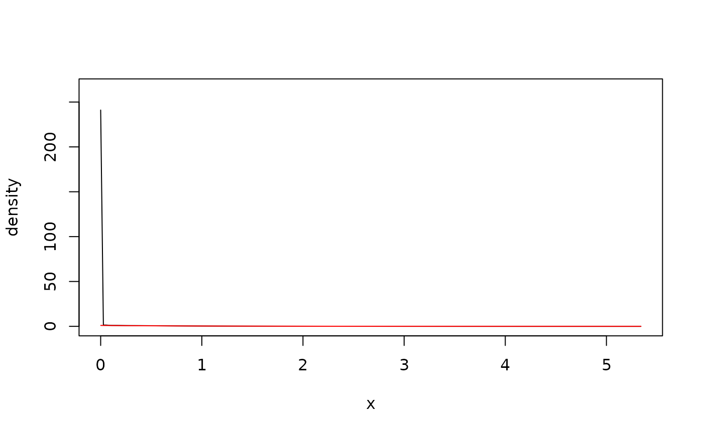
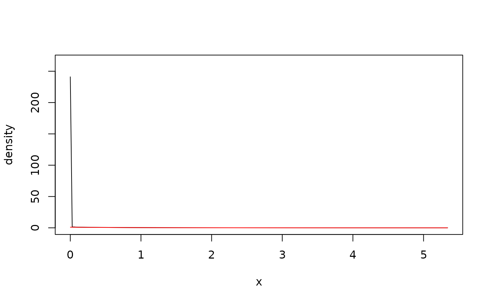

The estimators can handle data with bounded, unbounded, and discrete support, see Details.
kde1d(
x,
xmin = NaN,
xmax = NaN,
mult = 1,
bw = NA,
deg = 2,
weights = numeric(0)
)Arguments
- x
vector (or one-column matrix/data frame) of observations; can be
numericorordered.- xmin
lower bound for the support of the density (only for continuous data);
NaNmeans no boundary.- xmax
upper bound for the support of the density (only for continuous data);
NaNmeans no boundary.- mult
positive bandwidth multiplier; the actual bandwidth used is \(bw*mult\).
- bw
bandwidth parameter; has to be a positive number or
NA; the latter uses the plug-in methodology of Sheather and Jones (1991) with appropriate modifications fordeg > 0.- deg
degree of the polynomial; either
0,1, or2for log-constant, log-linear, and log-quadratic fitting, respectively.- weights
optional vector of weights for individual observations.
Value
An object of class kde1d.
Details
A gaussian kernel is used in all cases. If xmin or xmax are
finite, the density estimate will be 0 outside of \([xmin, xmax]\). A
log-transform is used if there is only one boundary (see, Geenens and Wang,
2018); a probit transform is used if there are two (see, Geenens, 2014).
Discrete variables are handled via jittering (see, Nagler, 2018a, 2018b).
A specific form of deterministic jittering is used, see equi_jitter().
References
Geenens, G. (2014). Probit transformation for kernel density estimation on the unit interval. Journal of the American Statistical Association, 109:505, 346-358, arXiv:1303.4121
Geenens, G., Wang, C. (2018). Local-likelihood transformation kernel density estimation for positive random variables. Journal of Computational and Graphical Statistics, to appear, arXiv:1602.04862
Nagler, T. (2018a). A generic approach to nonparametric function estimation with mixed data. Statistics & Probability Letters, 137:326–330, arXiv:1704.07457
Nagler, T. (2018b). Asymptotic analysis of the jittering kernel density estimator. Mathematical Methods of Statistics, in press, arXiv:1705.05431
Sheather, S. J. and Jones, M. C. (1991). A reliable data-based bandwidth selection method for kernel density estimation. Journal of the Royal Statistical Society, Series B, 53, 683–690.
See also
Examples
## unbounded data
x <- rnorm(500) # simulate data
fit <- kde1d(x) # estimate density
dkde1d(0, fit) # evaluate density estimate
#> [1] 0.3957527
summary(fit) # information about the estimate
#> kernel density estimate ('kde1d'), log-quadratic
#> -----------------------------------------------------------------
#> nobs = 500, bw = 0.71, loglik = -712.05, d.f. = 4.65
plot(fit) # plot the density estimate
curve(dnorm(x),
add = TRUE, # add true density
col = "red"
)
 ## bounded data, log-linear
x <- rgamma(500, shape = 1) # simulate data
fit <- kde1d(x, xmin = 0, deg = 1) # estimate density
dkde1d(seq(0, 5, by = 1), fit) # evaluate density estimate
#> [1] 2.409557e+02 3.409745e-01 1.155638e-01 3.951467e-02 8.084613e-03
#> [6] 1.126153e-03
summary(fit) # information about the estimate
#> kernel density estimate ('kde1d'), log-linear with bounded support (xmin = 0)
#> -----------------------------------------------------------------
#> nobs = 500, bw = 0.3, loglik = -450.93, d.f. = 12.89
plot(fit) # plot the density estimate
curve(dgamma(x, shape = 1), # add true density
add = TRUE, col = "red",
from = 1e-3
)

## discrete data
x <- rbinom(500, size = 5, prob = 0.5) # simulate data
x <- ordered(x, levels = 0:5) # declare as ordered
fit <- kde1d(x) # estimate density
dkde1d(sort(unique(x)), fit) # evaluate density estimate
#> [1] 0.04736923 0.16091189 0.29017110 0.30269678 0.16344180 0.03540920
summary(fit) # information about the estimate
#> (jittered) kernel density estimate ('kde1d'), log-quadratic
#> -----------------------------------------------------------------
#> nobs = 500, bw = 1.12, loglik = -789.98, d.f. = 10.08
plot(fit) # plot the density estimate
points(ordered(0:5, 0:5), # add true density
dbinom(0:5, 5, 0.5),
col = "red"
)
## bounded data, log-linear
x <- rgamma(500, shape = 1) # simulate data
fit <- kde1d(x, xmin = 0, deg = 1) # estimate density
dkde1d(seq(0, 5, by = 1), fit) # evaluate density estimate
#> [1] 2.409557e+02 3.409745e-01 1.155638e-01 3.951467e-02 8.084613e-03
#> [6] 1.126153e-03
summary(fit) # information about the estimate
#> kernel density estimate ('kde1d'), log-linear with bounded support (xmin = 0)
#> -----------------------------------------------------------------
#> nobs = 500, bw = 0.3, loglik = -450.93, d.f. = 12.89
plot(fit) # plot the density estimate
curve(dgamma(x, shape = 1), # add true density
add = TRUE, col = "red",
from = 1e-3
)

## discrete data
x <- rbinom(500, size = 5, prob = 0.5) # simulate data
x <- ordered(x, levels = 0:5) # declare as ordered
fit <- kde1d(x) # estimate density
dkde1d(sort(unique(x)), fit) # evaluate density estimate
#> [1] 0.04736923 0.16091189 0.29017110 0.30269678 0.16344180 0.03540920
summary(fit) # information about the estimate
#> (jittered) kernel density estimate ('kde1d'), log-quadratic
#> -----------------------------------------------------------------
#> nobs = 500, bw = 1.12, loglik = -789.98, d.f. = 10.08
plot(fit) # plot the density estimate
points(ordered(0:5, 0:5), # add true density
dbinom(0:5, 5, 0.5),
col = "red"
)
 ## weighted estimate
x <- rnorm(100) # simulate data
weights <- rexp(100) # weights as in Bayesian bootstrap
fit <- kde1d(x, weights = weights) # weighted fit
plot(fit) # compare with unweighted fit
lines(kde1d(x), col = 2)
## weighted estimate
x <- rnorm(100) # simulate data
weights <- rexp(100) # weights as in Bayesian bootstrap
fit <- kde1d(x, weights = weights) # weighted fit
plot(fit) # compare with unweighted fit
lines(kde1d(x), col = 2)